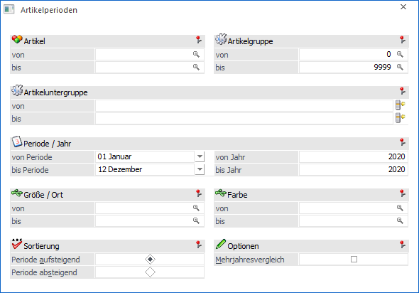
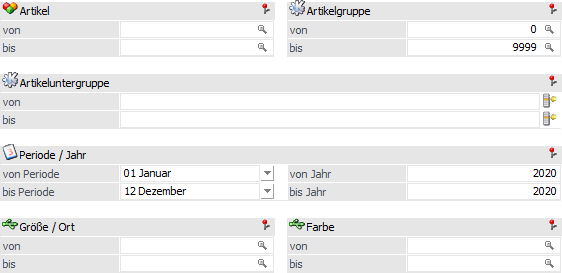
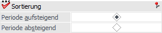
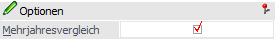
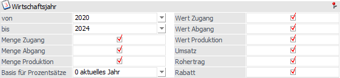
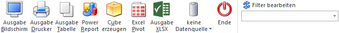

In der Artikelperiodenliste, welche im Menüpunkt…
1 WinLine FAKT
1 Auswertungen
1 Artikellisten
1 Artikelperiodenliste
… aufgerufen wird, werden die Lagerbewegungen (mengenmäßig und wertmäßig) nach Perioden summiert und pro Artikel und Periode aufgelistet.

Die Ausgabe kann durch folgende Kriterien eingeschränkt bzw. beeinflusst werden:
Selektion

Ø Artikel von / bis
An dieser Stelle kann nach den Artikeln eingeschränkt werden, welche ausgewertet werden sollen. Bleiben die Felder leer so werden alle Artikel in die Auswertung einbezogen.
Ø Artikelgruppe von / bis
In diesen Feldern kann nach den Artikelgruppen eingeschränkt werden, welche ausgegeben werden sollen.
Ø Artikeluntergruppe von / bis
An dieser Stelle kann nach den Artikeluntergruppen eingeschränkt werden. Bleiben die Felder leer so werden alle Artikel aller Artikeluntergruppen in die Auswertung einbezogen.
Ø Periode und Jahr von / bis
Aus den Auswahlboxen können die Perioden 1 bis 12, sowie die Eröffnungsperiode gewählt werden. Zusätzlich ist die Angabe der Jahre möglich, welche ausgewertet werden sollen.
Hinweis
Wird die Option "Mehrjahresvergleich" aktiviert, so steht die Eröffnungsperiode nicht mehr als Auswahlmöglichkeit zur Verfügung. Zusätzlich erfolgt die Eingabe des Jahres im Bereich "Mehrjahresvergleich"
Ø Ausprägung 1 von / bis (hier "Größe / Ort")
Zusätzlich kann eine Einschränkung auf die Ausprägung 1 vorgenommen werden. Sobald eine Einschränkung auf Ausprägung 1 vorhanden ist, wird die, unter "Artikel" eingegebene Nummer, als Hauptartikelnummer verwendet.
Beispiel
Wenn in der Artikelperiodenliste unter "Artikel von / bis" die Nummer "10018" und unter Ausprägung 1 "K" bis "E" eingegeben wird, werden alle selektierten Ausprägungsartikel des Artikels 10018 angezeigt.
Ø Ausprägung 2 von / bis (hier "Farbe")
Neben Ausprägung 1 kann auch eine Einschränkung auf die Ausprägung 2 vorgenommen werden. Sobald eine Einschränkung auf Ausprägung 2 vorhanden ist, wird die, unter "Artikel" eingegebene Nummer, als Hauptartikelnummer verwendet.
Beispiel
Wenn in der Artikelperiodenliste unter "Artikel von / bis" die Nummer "CZ010" und unter Ausprägung 2 "GR" bis "ROT" eingegeben wird, werden alle selektierten Ausprägungsartikel des Artikels CZ010 angezeigt.
Sortierung

Ø Sortierung
Die Sortierung der Ausgabe kann wahlweise aufsteigend oder absteigend nach Periode erfolgen.
Optionen

Ø Mehrjahresvergleich
Wird die Checkbox "Mehrjahresvergleich" aktiviert, so wird das Fenster um die Auswertemöglichkeit eines Mehrjahresvergleiches erweitert (siehe Bereich "Wirtschaftsjahr").
Wirtschaftsjahr

Für den Mehrjahresvergleich stehen folgende Definitionsmöglichkeiten zur Verfügung:
Ø Wirtschaftsjahr von / bis
Aus den Auswahlboxen können die Wirtschaftsjahre gewählt werden, für welche der Mehrjahresvergleich ausgegeben werden soll.
Ø Checkboxen (Menge Zugang, Menge Abgang, Menge Produktion, Wert Zugang, etc.)
Durch Aktivieren der Checkboxen kann festgelegt werden, ob die entsprechenden Einträge bei der Auswertung mit angezeigt werden sollen oder nicht.
Ø Basis für Prozentsätze
An dieser Stelle kann definiert werden, welcher Wert die Basis für die Prozentberechnung ist.
ü 0 - aktuelles Jahr
Wird als
Basis für Prozentsätze "0 - aktuelles Jahr" gewählt, so beziehen sich die
angeführten Prozentsätze immer auf das aktuelle Wirtschaftsjahr.
Beispiel
ü Jahr: 2024 - Umsatz: 100,00
ü Jahr: 2023 - Umsatz: 150,00
ü Jahr: 2022 - Umsatz: 130,00
Im Jahr 2023 werden in der
Spalte Prozent "-33 %" angezeigt, da der Umsatz im Jahr 2024 um 33% niedriger
ist als im Jahr 2023.
Im Jahr 2022 werden in der Spalte Prozent "-23 %"
angezeigt, da der Umsatz im Jahr 2024 um 23% niedriger ist als im Jahr 2022.
ü 1 - Folgejahr
Wird als Basis
für Prozentsätze "1 - Folgejahr" gewählt, so beziehen sich die angeführten
Prozentsätze immer auf das Folgejahr.
Beispiel
ü Jahr: 2024 - Umsatz: 100,00
ü Jahr: 2023 - Umsatz: 150,00
ü Jahr: 2022 - Umsatz: 130,00
Im Jahr 2023 werden in der
Spalte Prozent "-33 %" angezeigt. D.h. der Umsatz ist im Jahr 2024 um 33%
niedriger als im Jahr 2023.
Im Jahr 2022 werden in der Spalte Prozent "15 %"
angezeigt, da der Umsatz im Jahr 2023 um 15% höher ist als im Jahr 2022.
Hinweis
Die Prozentsätze werden nur bei den Ausgabevarianten "Ausgabe Bildschirm" und "Ausgabe Drucker" berechnet und ausgegeben.
Buttons

Ø Ausgabe Bildschirm
Mit Hilfe des Buttons "Ausgabe Bildschirm" oder der Taste F5 wird die Auswertung am Bildschirm ausgegeben.
Ø Ausgabe Drucker
Durch Anwahl des Buttons "Ausgabe Drucker" wird die Auswertung am Drucker ausgegeben.
Ø Ausgabe Tabelle
Bei der Anwahl des Buttons "Ausgabe Tabelle" wird die Periodenliste in Form einer WinLine Tabelle dargestellt (nähere Informationen entnehmen Sie bitte dem Kapitel Artikelperiodenliste Tabelle).
Ø Power Report
Durch Drücken des Buttons "Power Report" wird die Auswertung auf Basis von Cube-Daten grafisch dargestellt. Die Ausgabe ist individuell anpassbar und erfolgt in der Form von "Widgets", die unterschiedlichsten Darstellungen ermöglichen.
Ø Cube erzeugen
Bei Anwahl des Buttons "Cube erzeugen" wird die Artikelperiodenliste im "Olap Viewer" angezeigt. In diesem können die Daten nach verschiedenen Gesichtspunkten ausgewertet werden. In der Auswertung selbst werden folgende Zahlenwerte (Fakten) angezeigt:
ü Menge Zugang (Herkunft: L-Buchungen)
ü Menge2 Zugang Herkunft: L-Buchungen)
ü Wert Zugang (Herkunft: L-Buchungen)
ü Menge Abgang (Herkunft: V-Buchungen)
ü Menge2 Abgang (Herkunft: V-Buchungen)
ü Wert Abgang (Herkunft: V-Buchungen)
ü Menge Produktion (Herkunft: P-Buchungen)
ü Menge2 Produktion (Herkunft: P-Buchungen)
ü Wert Produktion (Herkunft: P-Buchungen)
ü Umsatz
ü Rohertrag
ü Bezugskosten
ü Rabatte
Neben den Fakten gibt es noch die Dimensionen, nach denen die Auswertung "betrachtet" werden kann:
ü Artikelnummer
ü Artikelbezeichnung
ü Charge-/Identnummer
ü Ausprägung1
ü Ausprägung2
ü Artikelgruppenbezeichnung
ü Artikeluntergruppenbezeichnung
ü Periode
ü Jahr
Ø Excel Pivot
Durch Anwahl des Buttons "Excel Pivot" werden die selektierten Zeilen in Form einer Pivot Ausgabe in Microsoft Excel (2007 oder höher) angezeigt.
Ø Ausgabe XLSX
Mit Hilfe des Buttons "Ausgabe XLSX" werden die selektierten Artikelperiodenzeilen an Microsoft Excel übergeben.
Ø Datenquelle
Mit Hilfe dieser Auswahl kann definiert werden, ob und wie eine Datenquelle (d.h. ein Snapshot oder eine MasterView) verwendet werden soll.
ü Keine Datenquelle
Bei Auswahl
von "keine Datenquelle" wird keine zuvor angelegte Datenquelle genutzt. D.h. die
Daten werden von der WinLine "live" ermittelt und in der gewünschten Form
ausgegeben.
Hinweis
Da die BI-Ausgabe (z.B. Cube oder Power Report) immer eine Datenquelle benötigt, wird im Hintergrund eine temporäre Datenquelle (Snapshot) gebildet.
ü Datenquelle
erstellen/aktualisieren
Die Daten werden zur Laufzeit ermittelt und an einen
zu definierenden Snapshot übergeben. Nach dem Füllen der Datenquelle wird die
gewünschte Ausgabevariante über die Datenquelle erzeugt. Dieser Vorgang kann mit
einer Zeitverzögerung verbunden sein, da die Daten zusätzlich gespeichert werden
müssen.
Hinweis
Die Ausgabevariante "Ausgabe Tabelle" steht beim Erstellen bzw. Aktualisieren einer Datenquelle nicht zur Verfügung.
ü Datenquelle verwenden
Bei der
Verwendung eines Snapshots werden die Daten direkt aus der Datenquelle gelesen,
d.h. die für die Ausgabe benötigten Daten können ohne Verzögerung in der
gewünschten Variante ausgegeben werden.
Wird hingegen eine MasterView
gewählt, so werden die Daten für die Ausgabe "live" ermittelt, wobei diese so
aktuell sind wie die zugrunde liegenden Datenquellen.
Hinweis
Der Button "Datenquelle verwenden" wird nur angeboten, wenn für diesen Bereich (bezogen auf den aktuellen Benutzer / Mandanten) zumindest eine private oder öffentliche Datenquelle existiert. Des Weiteren steht die Ausgabevariante "Ausgabe Tabelle" nicht zur Verfügung.
Hinweis
Weitere Informationen zum Thema "Datenquellen" entnehmen Sie bitte dem Kapitel "Die Datenquelle".
Ø Ende
Durch Drücken des Buttons "Ende" bzw. der Taste ESC wird das Fenster geschlossen.
Ø Filter bearbeiten
Durch Anklicken des Buttons "Filter bearbeiten" kann die Artikelperiodenliste nach frei definierbaren Kriterien eingeschränkt werden.